Prodlužování vlasů NANOTAPE
Vlasy, které vypadají jako vaše vlastní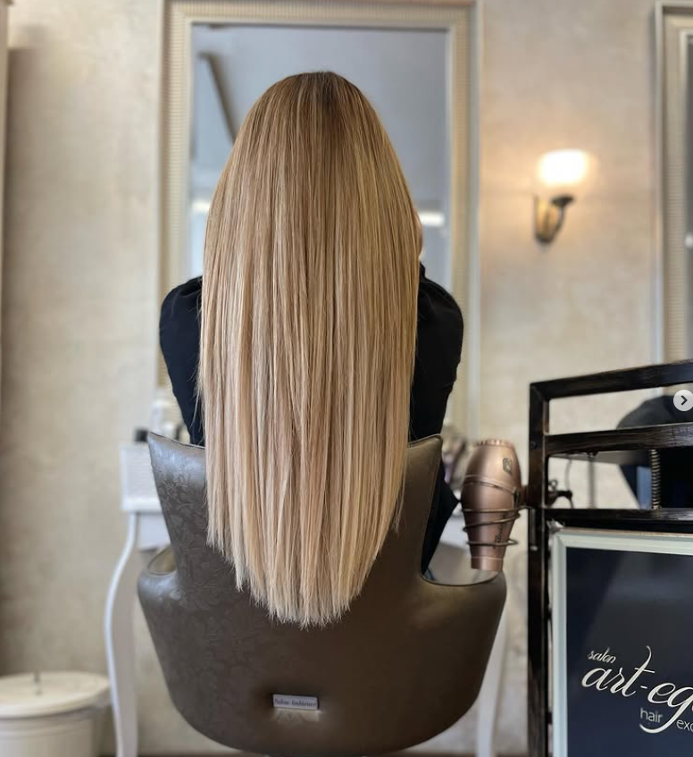
Co je to metoda Nano Tape?
Nano Tape představuje absolutní špičku v moderním prodlužování vlasů. Jde o tzv. sendvičovou metodu, při které se vaše vlastní vlasy „uzamknou“ mezi dva extrémně tenké a lehké spoje s prodlužovanými prameny.
Na rozdíl od starších metod nepotřebujeme žádné teplo, lepidla v lahvičkách ani kovové kroužky. Pásky jsou vybaveny speciální hypoalergenní lepicí vrstvou, která je navržena tak, aby byla k vašim vlasům maximálně šetrná, a přitom vytvořila neviditelný, plochý a přirozený spoj.

Proč si vybrat právě Nano Tape?
Mnoho klientek se k Nano Tape vrací, protože nabízí dokonalou rovnováhu mezi estetikou a pohodlím. Zde jsou důvody, proč si tuto metodu zamilujete:Maximální neviditelnost:
Pásky jsou ultra tenké a ploché. Po aplikaci splynou s pokožkou hlavy, takže ani při culíku nebo složitějších účesech není poznat, že máte vlasy prodloužené.
Šetrnost k vašim vlasům
Aplikace nezatěžuje vaše vlastní vlasy. Nedochází k tahání, lámání ani poškozování teplem. Je to ideální volba i pro jemné nebo řidší vlasy.
Pocit lehkosti:
Pásky jsou ohebné a přirozeně kopírují tvar vaší hlavy. Zapomenete, že je máte – při ležení, česání i mytí vlasů jsou prakticky neznatelné.
Znovupoužitelnost:
Kvalitní vlasové prameny můžete používat opakovaně. Při posouvání (cca jednou za 6–8 týdnů) stačí pouze vyměnit lepicí pásku a vlasy jsou připraveny na další cyklus nošení.
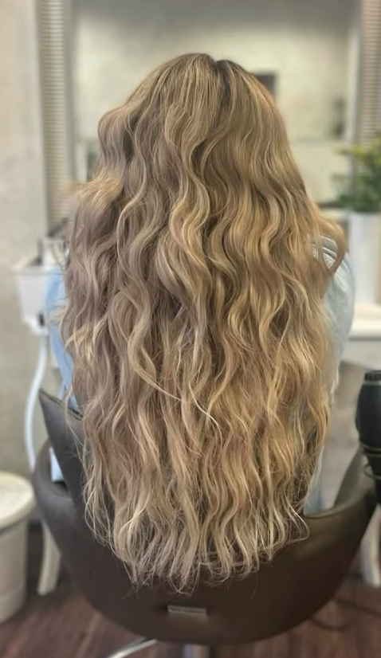
Pro koho je Nano Tape ideální?
Metoda Nano Tape je vhodná pro každého, kdo hledá přirozený výsledek bez kompromisů:Pro jemné vlasy:
Díky nízké hmotnosti spojů je vhodná i pro klientky, které si dříve prodlužování dovolit nemohly.
Pro aktivní životní styl:
Vlasy drží pevně a spolehlivě při každodenních aktivitách.
Pro milovnice přirozenosti:
Pokud chcete objem a délku, které vypadají jako „vaše vlastní“, je toto nejlepší volba.
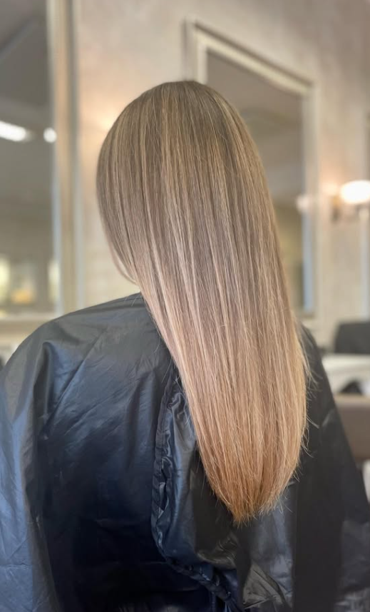
Proč si zamilujete metodu nanotape?
7 důvodů, proč si zamilujete prodlužování vlasů metodou nanotape:Přirozený vzhled bez viditelných spojů
Okamžitá délka a objem během jedné návštěvy
Šetrná metoda vhodná i pro jemnější vlasy
Pohodlné nošení bez nepříjemného tahu
Krásné a husté vlasy každý den
Více sebevědomí a ženského pocitu
Výsledek, který vypadá luxusně a přirozeně zároveň
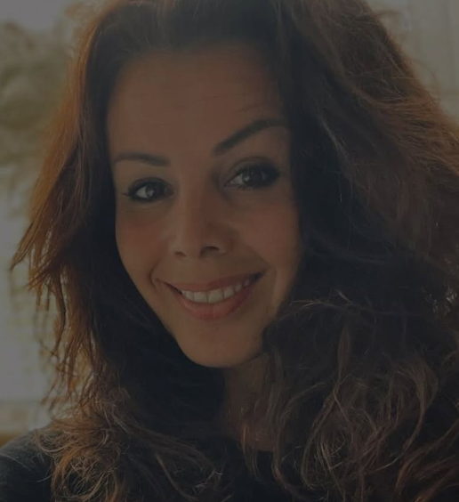
Pavla Polesová
19 let v beauty oboru / CEO Art - EgoDÉLKA. OBJEM. PŘIROZENOST.
Přesně to jsou tři nejčastější požadavky mých klientek. 🤍
Mnoho žen touží po dlouhých a hustých vlasech, ale zároveň se obává nepřirozeného vzhledu nebo viditelných spojů.
Právě proto pracuji s metodou Nanotape, která patří mezi nejšetrnější a nejpřirozenější způsoby prodloužení vlasů.
Mým cílem není, aby okolí poznalo, že máte prodloužené vlasy.
Mým cílem je, aby vám každý říkal: „Ty máš ale nádherné vlasy.“
Pokud přemýšlíte o prodloužení vlasů a nejste si jistá, zda je Nanotape vhodný právě pro vás, napište mi zprávu a ráda vám vše vysvětlím při nezávazné konzultaci.
Před a Po
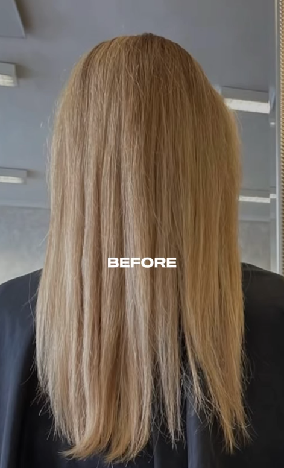
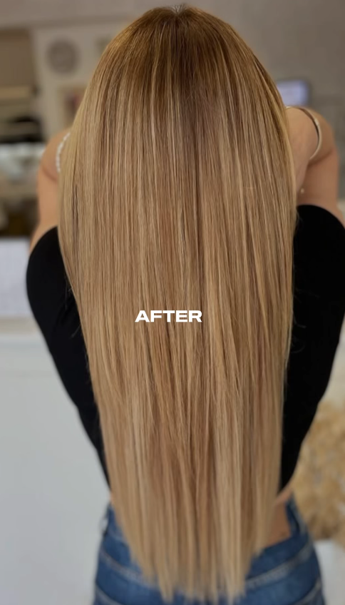
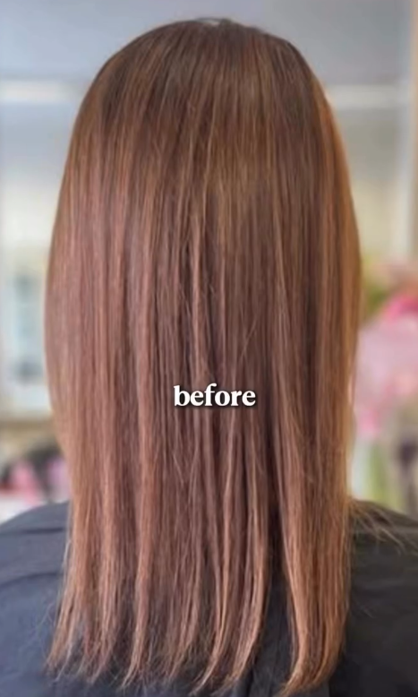
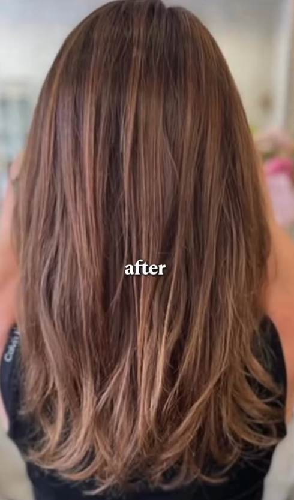
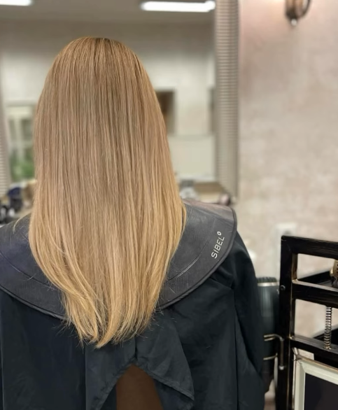
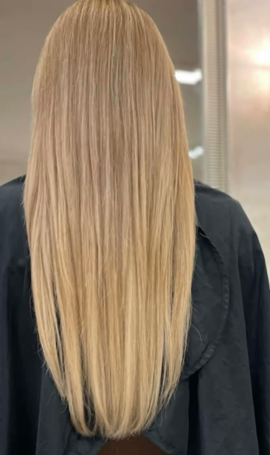
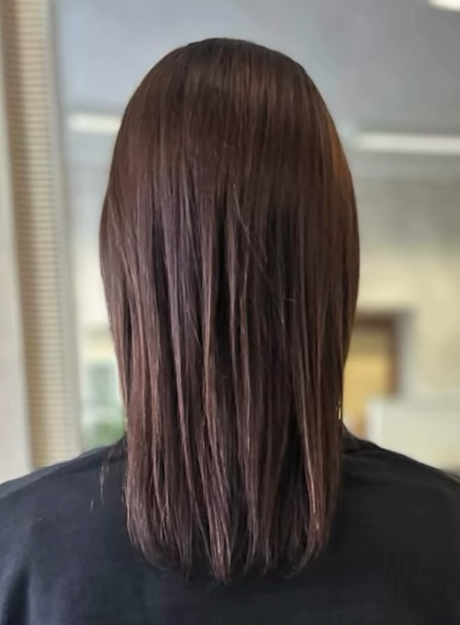
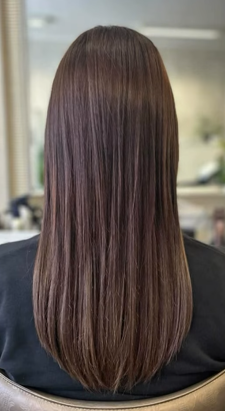
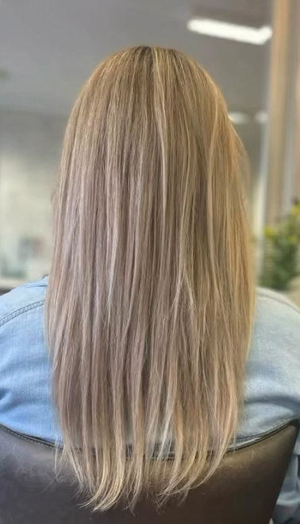
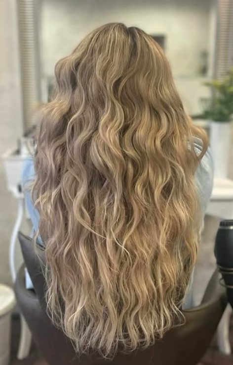
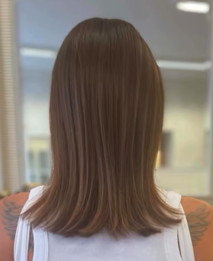
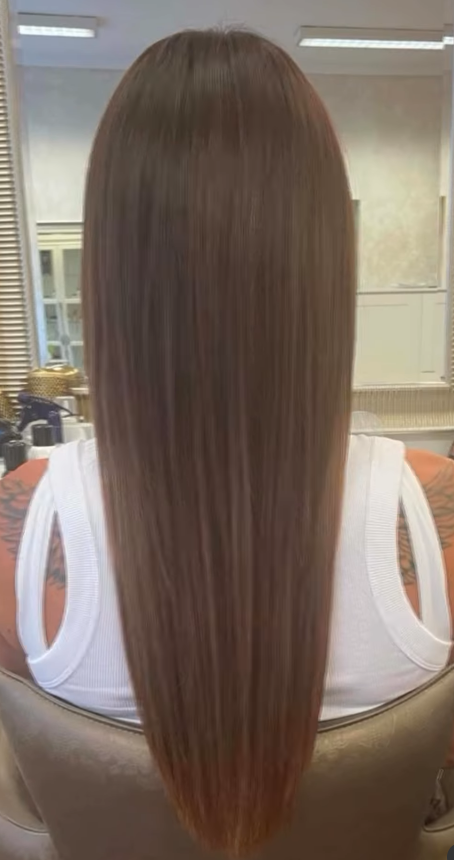
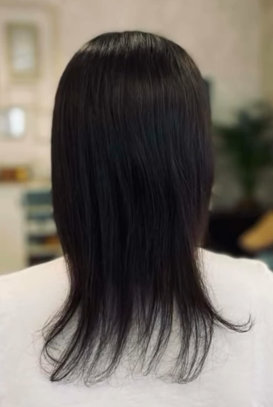
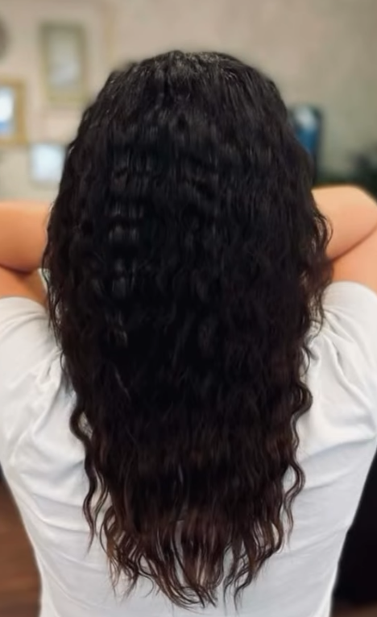